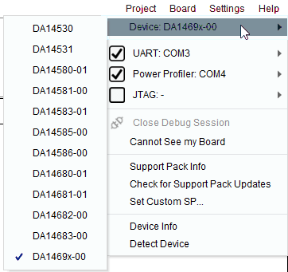
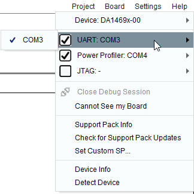
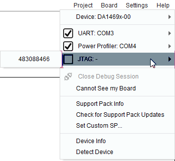
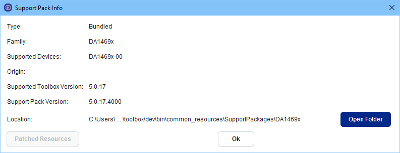
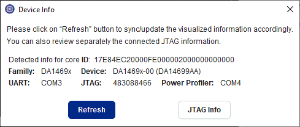

11.1. User interface¶
11.1.2. Group View¶
This group contains buttons that help user to organize the application view layout. User can load the default or last saved view layout for this family, create new or delete a previously created view layout.
Figure 162 View ribbon group
| Icon | Description |
|---|---|
| Previous user specified view layout is the latest layout that has been saved for each board family. Latest view layout is saved when user changes family or when user exits Toolbox | |
 |
Load default view layout which includes Power Profiler tool and some Estimator group tools available only for certain families. |
| Save new custom view layout will save the locations and sizes of all currently opened tools | |
| Load custom view layout | |
| Delete custom view layout |
11.1.3. Group Programmer¶
Programmer group contains all the tools needed to program any memory resource available on the DK as well as the SOC such as OTP, external or embedded FLASH for code, external FLASH or EEPROM for data etc.
Figure 163 Programmer ribbon group for DA1453x family
Figure 164 Programmer ribbon group for DA1469x family
This group contains the following tools:
| Icon | Description |
|---|---|
| OTP |
Program OTP Memory (Reloaded version of OTP Programmer tools) |
| EEPROM Programmer |
Download image file to EEPROM |
| Proprietary Header Programmer |
Burn header or NVDS to EEPROM or SPI flash memory |
| QSPI Partition Table |
Manage QSPI Flash partitions |
| Flash Code |
Program the part of the Flash that contains executable code |
| Flash Data |
Program the Flash |
| RAM |
Program the System RAM |
| OTA Services |
Software patching and firmware download over the air |
| SUOTA |
Software update over the air |
11.1.4. Group Manager¶
Manager groups contains all the tools used for setting the SOC into predefined states for monitoring or testing real-time.
Figure 165 Manager ribbon group for DA1453x family
Figure 166 Manager ribbon group for DA1469x family
This group contains the following tools:
| Icon | Description |
|---|---|
| RF Master |
RF Master tests |
| XTAL Manager |
XTAL configuration |
| IO Manager |
GPIO configuration |
| Registers Access |
Registers’ configuration |
| Terminal |
UART Terminal, available only when connection is over UART |
| Terminal Scripting |
Terminal Scripting |
11.1.5. Group Configurator¶
The Configurator Group tools help in defining certain states of the SoC during the actual application. The output of these group’s tools shall be structures that are natively supported by the SDK.
Figure 167 Configurator ribbon group for DA1453x family
This group contains the following tools:
| Icon | Description |
|---|---|
| Board Setup |
Manage communication with the chip |
11.1.6. Group Monitor¶
This group of tools contains important monitoring applications that are of interest to a developer on Renesas’s DK and SDK. While some of these applications are passively printing values coming from a hardware-based measuring circuitry (Power Profiler), others need certain, code images to be downloaded so that they can display the required data.
Figure 168 Monitor ribbon group for DA1458x family
This group contains the following tools:
| Icon | Description |
|---|---|
 Log |
Log messages from all tools |
| Power Profiler |
Plot the current drawn by the chip’s battery |
 Data Rate Monitor |
Monitors the overall receive and transmit rate over Bluetooth |
11.1.7. Group Estimator¶
Estimator group contains tools that allow the user to estimate various chip specific metrics by testing various usage scenarios.
Figure 169 Estimator ribbon group for DA1458x family
Figure 170 Estimator ribbon group for DA1470x family
This group contains the following tools:
| Icon | Description |
|---|---|
| Battery Lifetime Estimator |
Estimate battery lifetime for the selected device family |
| Sleep Mode Advisor |
Analyze power consumption for target application |
| Graphics FPS Estimator |
Estimate the typically and maximum achievable frame rate |
11.1.8. Tool specific groups¶
Apart from the groups mentioned above SmartSnippets™ Toolbox provides two ribbon groups / toolbars containing tool specific utilities that are activated when certain tools are selected:
- Power Profiler: is activated when the respective tool is selected and is hidden once the respective tool is closed. The functionality of this toolbar is described under Power Profiler section.
- RF Master: is activated when RF Master, XTAL Manger, Register Access or IO Manager tools are selected and hidden if none of these tools are open. The functionality of this toolbar is described under RF Master section.
11.1.11. Board Menu¶
This menu can be used to configure the connected device(s) and manage the Support Pack.
- Device: (Figure 171) User can select from the list the device name that matches the connected device. In case the connected device is detected, the device is automatically selected.
- UART: (Figure 172) User can select from the list the UART port of the connected device. In case the connected device is detected, the UART port is automatically selected. Unchecking the UART checkbox indicates that the user doesn’t want UART interface to be used for communication with the device. If an alternative interface has been configured (e.g. JTAG) certain tools that can use either of the two interfaces will still be functional and use the alternative interface instead. Tools that require UART interface to communicate with the device will have buttons that depend on communication over UART disabled until the UART interface is configured.
- Power Profiler: User can select from the list the Power Profiler port of the connected device. In case the connected device is detected, the Power Profiler port is automatically selected. Unchecking the Power Profiler checkbox indicates that the user doesn’t want to communicate with the device over the Power Profiler port. This means that if no Power Profiler port is selected or the Power Profiler checkbox is unchecked, the user will not be able to use the Power Profiler tool.
- JTAG: (Figure 173) User can select from the list the JTAG serial of the connected device. In case the connected device is detected, the JTAG serial is automatically selected. Unchecking the UART checkbox indicates that the user doesn’t want JTAG interface to be used for communication with the device. If UART interface has been configured this will be used instead in that case. If both JTAG and UART interfaces have been configured, JTAG interface will be used which is faster than UART.
- Close Debug Session: Applies to JTAG interface. Terminates the communication with the debugger.
- Cannot See my Board: Help message that informs the user on what can be done in order for the application to identify the connected device(s).
- Support Pack Info: (Figure 174) Provides information about the used Support Pack: Its type (bundled or custom or online resource), its location, the devices it supports e.t.c..
- Check Online for Updates: Checks for Support Packs updates for the selected device.
- Device Info: (Figure 175) Provides info of the connected device once it has been detected. Info includes the device core ID, its family and name and its interfaces. Refresh button on Device Info dialog triggers again the detection logic. JTAG Info button reads device info over JTAG interface.
- Detect Device: (Figure 176) Detects connected device(s). Note that the user may have to press the hardware reset button in order for the device detection firmware to be downloaded over UART to the device. A message prompting the user to press the HW reset button will be added to the Log in that case. In case a single device is detected, when the user presses OK on the device detection dialog, the device type, UART, JTAG and SPI interfaces will be automatically selected under the Board menu. If more than one devices are detected, the user will be asked to select with which device the application should work with. Once the user selects one of the detected devices the entries under the Board menu regarding device name, UART, JTAG and SPI interface will be automatically selected.

Figure 171 Devices Menu |

Figure 172 UART Menu |

Figure 173 JTAG Menu |

Figure 174 SP Info Menu |
||

Figure 175 Device Info |
||

Figure 176 Device Detection Results |
||